SORM¶
- class SORM(*args)¶
Second Order Reliability Method (SORM).
Refer to SORM.
- Available constructors:
SORM(nearestPointAlgorithm, event, physicalStartingPoint)
- Parameters
- nearestPointAlgorithm
OptimizationAlgorithm Optimization algorithm used to research the design point.
- event
RandomVector Failure event.
- physicalStartingPointsequence of float
Starting point of the optimization algorithm, declared in the physical space.
- nearestPointAlgorithm
See also
Notes
See
Analyticalfor the description of the first steps of the SORM analysis.The Second Order Reliability Method (SORM) consists in approximating the limit state surface in U-space at the design point 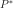 by a quadratic surface. SORM is usually more accurate than FORM e.g. in case when the event boundary is highly curved.
Let us denote by
 the dimension of the random vector
the dimension of the random vector  and 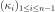 the 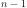 main curvatures of
the limit state function at the design point in the standard space.
and 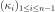 the 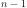 main curvatures of
the limit state function at the design point in the standard space.Several approximations of the failure probability
 are available in
the library, and detailed here in the case where the origin
of the standard space does not belong to the failure domain:
are available in
the library, and detailed here in the case where the origin
of the standard space does not belong to the failure domain:Breitung’s formula:
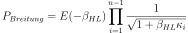
 the marginal cumulative density function of the spherical
distributions in the standard space and
the marginal cumulative density function of the spherical
distributions in the standard space and  is the Hasofer-Lind
reliability index, defined as the distance of the design point
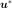 to the origin of the standard space.
is the Hasofer-Lind
reliability index, defined as the distance of the design point
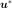 to the origin of the standard space.Hohenbichler’s formula is an approximation of the previous equation:
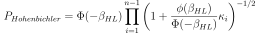
where
 is the cumulative distribution function of the
standard 1D normal distribution and 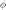 is the standard Gaussian
probability density function.
is the cumulative distribution function of the
standard 1D normal distribution and 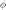 is the standard Gaussian
probability density function.Tvedt’s formula:
![\left\{
\begin{array}{lcl}
\displaystyle P_{Tvedt} & = & A_1 + A_2 + A_3 \\
\displaystyle A_1 & = & \displaystyle
\Phi(-\beta_{HL}) \prod_{i=1}^{N-1} \left( 1 + \beta_{HL} \kappa_i \right) ^{-1/2}\\
\displaystyle A_2 & = & \displaystyle
\left[ \beta_{HL} \Phi(-\beta_{HL}) - \phi(\beta_{HL}) \right]
\left[ \prod_{j=1}^{N-1} \left( 1 + \beta_{HL} \kappa_i \right) ^{-1/2} -
\prod_{j=1}^{N-1} \left( 1 + (1 + \beta_{HL}) \kappa_i \right) ^{-1/2}
\right ] \\
\displaystyle A_3 & = & \displaystyle (1 + \beta_{HL})
\left[ \beta_{HL} \Phi(-\beta_{HL}) - \phi(\beta_{HL}) \right]
\left[ \prod_{j=1}^{N-1} \left( 1 + \beta_{HL} \kappa_i \right) ^{-1/2} -
{\cR}e \left( \prod_{j=1}^{N-1} \left( 1 + (i + \beta_{HL}) \kappa_j \right) ^{-1/2}
\right)\right ]
\end{array}
\right.](../../_images/math/7ee447a22e91ba26eda27ae2ba3ea81361c1d16e.svg)
where 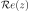 is the real part of the complex number 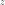 and
 the complex number such that 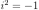.
the complex number such that 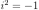.
The evaluation of the failure probability is stored in the data structure
SORMResultrecoverable with thegetResult()method.Examples
>>> import openturns as ot >>> myFunction = ot.SymbolicFunction(['E', 'F', 'L', 'I'], ['-F*L^3/(3*E*I)']) >>> myDistribution = ot.Normal([50.0, 1.0, 10.0, 5.0], [1.0]*4, ot.IdentityMatrix(4)) >>> vect = ot.RandomVector(myDistribution) >>> output = ot.CompositeRandomVector(myFunction, vect) >>> event = ot.ThresholdEvent(output, ot.Less(), -3.0) >>> # We create an OptimizationAlgorithm algorithm >>> solver = ot.AbdoRackwitz() >>> algo = ot.SORM(solver, event, [50.0, 1.0, 10.0, 5.0]) >>> algo.run() >>> result = algo.getResult()
Methods
Accessor to the result.
Accessor to the object's name.
getEvent()Accessor to the event of which the probability is calculated.
getId()Accessor to the object's id.
getName()Accessor to the object's name.
Accessor to the optimization algorithm used to find the design point.
Accessor to the starting point of the optimization algorithm.
Accessor to the result of SORM.
Accessor to the object's shadowed id.
Accessor to the object's visibility state.
hasName()Test if the object is named.
Test if the object has a distinguishable name.
run()Evaluate the failure probability.
setEvent(event)Accessor to the event of which the probability is calculated.
setName(name)Accessor to the object's name.
setNearestPointAlgorithm(solver)Accessor to the optimization algorithm used to find the design point.
setPhysicalStartingPoint(physicalStartingPoint)Accessor to the starting point of the optimization algorithm.
setResult(sormResult)Accessor to the result of SORM.
setShadowedId(id)Accessor to the object's shadowed id.
setVisibility(visible)Accessor to the object's visibility state.
- __init__(*args)¶
- getAnalyticalResult()¶
Accessor to the result.
- Returns
- result
AnalyticalResult Result structure which contains the results of the optimisation problem.
- result
- getClassName()¶
Accessor to the object’s name.
- Returns
- class_namestr
The object class name (object.__class__.__name__).
- getEvent()¶
Accessor to the event of which the probability is calculated.
- Returns
- event
RandomVector Event of which the probability is calculated.
- event
- getId()¶
Accessor to the object’s id.
- Returns
- idint
Internal unique identifier.
- getName()¶
Accessor to the object’s name.
- Returns
- namestr
The name of the object.
- getNearestPointAlgorithm()¶
Accessor to the optimization algorithm used to find the design point.
- Returns
- algorithm
OptimizationAlgorithm Optimization algorithm used to research the design point.
- algorithm
- getPhysicalStartingPoint()¶
Accessor to the starting point of the optimization algorithm.
- Returns
- point
Point Starting point of the optimization algorithm, declared in the physical space.
- point
- getResult()¶
Accessor to the result of SORM.
- Returns
- result
SORMResult Structure containing all the results of the SORM analysis.
- result
- getShadowedId()¶
Accessor to the object’s shadowed id.
- Returns
- idint
Internal unique identifier.
- getVisibility()¶
Accessor to the object’s visibility state.
- Returns
- visiblebool
Visibility flag.
- hasName()¶
Test if the object is named.
- Returns
- hasNamebool
True if the name is not empty.
- hasVisibleName()¶
Test if the object has a distinguishable name.
- Returns
- hasVisibleNamebool
True if the name is not empty and not the default one.
- run()¶
Evaluate the failure probability.
Notes
Evaluate the failure probability and create a
SORMResult, the structure result which is accessible with the methodgetResult().
- setEvent(event)¶
Accessor to the event of which the probability is calculated.
- Parameters
- event
RandomVector Event of which the probability is calculated.
- event
- setName(name)¶
Accessor to the object’s name.
- Parameters
- namestr
The name of the object.
- setNearestPointAlgorithm(solver)¶
Accessor to the optimization algorithm used to find the design point.
- Parameters
- algorithm
OptimizationAlgorithm Optimization algorithm used to research the design point.
- algorithm
- setPhysicalStartingPoint(physicalStartingPoint)¶
Accessor to the starting point of the optimization algorithm.
- Parameters
- pointsequence of float
Starting point of the optimization algorithm, declared in the physical space.
- setResult(sormResult)¶
Accessor to the result of SORM.
- Parameters
- result
SORMResult Structure containing all the results of the SORM analysis.
- result
- setShadowedId(id)¶
Accessor to the object’s shadowed id.
- Parameters
- idint
Internal unique identifier.
- setVisibility(visible)¶
Accessor to the object’s visibility state.
- Parameters
- visiblebool
Visibility flag.